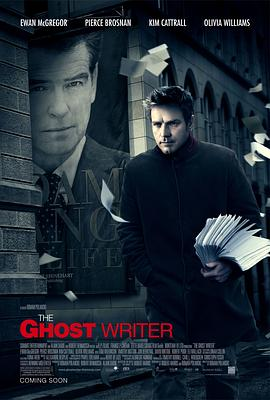

影子写手 / The Ghost Writer
又名：影子灭杀令(港) / 猎杀幽灵写手(台) / 捉刀手 / 枪手 / 代笔作家 / 幽灵写手 / The Ghost
前110分钟支离破碎，最后10分钟值四星
作品信息
| 导演 | 罗曼·波兰斯基 |
| 编剧 | 罗伯特·哈里斯 |
| 主演 | 伊万·麦克格雷格 / 皮尔斯·布鲁斯南 / 奥莉维亚·威廉姆斯 / 金·凯特罗尔 / 汤姆·威尔金森 / 蒂莫西·赫顿 / 安娜·鲍丁 / 乔·博恩瑟 |
| 类型 | 剧情 / 悬疑 / 惊悚 |
| 制片国家/地区 | 法国 / 德国 / 英国 |
| 语言 | 英语 |
| 上映日期 | 2010-02-12(柏林电影节) / 2010-02-18(德国) |
| 片长 | 128分钟 |
| IMDb | tt1139328 |
最后一次看到是 2026-08-12T21:13:00+08:00 · 豆瓣原页